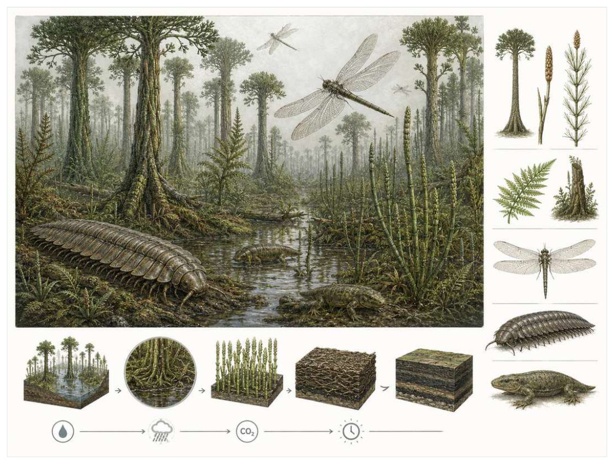

第08篇 · 石炭纪：巨型森林、节肢动物与羊膜动物 · 第 25 章
石炭纪煤沼：高耸森林与缓慢埋藏的碳
本篇主题:石炭纪：巨型森林、节肢动物与羊膜动物
煤沼森林改变大气与河流，陆地脊椎动物摆脱对水中繁殖的依赖。

本章科学复原配图 （用于呈现结构与生态关系, 不替代化石照片、测量数据与系统发育证据。）
把时间拨到约3.59亿至2.99亿年前，尤指宾夕法尼亚亚纪湿地。这一章不只列出当时的生物，而要追问环境、能量和生态关系怎样共同塑造身体。石炭纪热带低地被广阔湿地森林覆盖，但它们并不是现代雨林的旧版本。树状石松、木贼和种子蕨构成树冠与下层，植物组织中木质素丰富，积水和缺氧减缓分解，大量泥炭在地层中保存并最终形成煤。森林随冰期海平面升降反复扩张和破碎，生态系统呈周期性更替。
进入这个时代
若真正置身其中，首先感受到的是介质本身：水是否含氧、地面是否稳定、空气是否干燥、植被是否遮挡视线。身体结构只有放在这些条件中才有意义。潮湿低地里，鳞木高耸，树干表面排列菱形叶痕；芦木像巨型木贼在河道边成片生长。地面不是厚实干土，而是积水、根座和腐烂植物交错的软层。每次海侵可能把森林淹没，沉积物覆盖旧泥炭，退海后新森林再次建立。
在“石炭纪煤沼：高耸森林与缓慢埋藏的碳”所覆盖的时间里，不能把地理与气候当作固定背景。海陆位置、海平面、河流或植被结构会改变资源可达性，同一性状在不同地区可能得到完全相反的选择结果。
以石炭纪煤沼：高耸森林与缓慢埋藏的碳为例，环境变化首先作用于生理边界。温度改变酶反应和耗氧量，氧气决定持续活动余量，酸碱度影响骨骼和外壳材料，水分则限制气体交换与胚胎发育。只有跨过这些底层约束，捕食和竞争才有机会决定谁占优势。 在本章中，这一约束具体落在“植物高生产力与低分解速率促成泥炭积累”这条关系上。
再从约3.59亿至2.99亿年前，尤指宾夕法尼亚亚纪湿地的时间尺度看，身体结构总有材料和发育成本。硬壳提高防护却使生长和运动更昂贵，长颈扩大取食范围却增加支撑与供血问题，高代谢提高持续活动也提高食物需求。所谓成功设计从来是特定环境中的权衡。 它与“巨型树状石松”共同决定了后续变化可以沿哪些路径发生。
生态系统如何运转
本章的一条关键关系是“植物高生产力与低分解速率促成泥炭积累”。它首先改变资源在个体之间的分配：能更早发现、处理或占据资源的种群获得收益，而另一方会承受新的选择压力。
围绕“植物高生产力与低分解速率促成泥炭积累”，这种关系没有永恒赢家。收益随密度和环境改变：防御越常见，攻击专门化的价值越高；资源越稀少，维持昂贵结构的代价越大。化石记录中的扩张与衰退，常是这种动态平衡被外部事件打破的结果。 对石炭纪煤沼：高耸森林与缓慢埋藏的碳而言，这一后果还会与“树冠、倒木和浅水池创造复杂三维栖息地”相互放大或抵消。
“树冠、倒木和浅水池创造复杂三维栖息地”体现了生态系统的反馈性。一方结构或行为稍有改变，另一方的防御、逃避、繁殖和空间选择就会重新排列，长期累积后才形成宏观演化差异。
围绕“树冠、倒木和浅水池创造复杂三维栖息地”，它的长期后果通常通过幼体和繁殖体现。成年个体即使能抵抗一次危机，只要巢址、配子、幼体食物或成长季节被破坏，种群仍会在数代内下降。 对石炭纪煤沼：高耸森林与缓慢埋藏的碳而言，这一后果还会与“海平面周期使森林群落反复迁移和重新组合”相互放大或抵消。
在约3.59亿至2.99亿年前，尤指宾夕法尼亚亚纪湿地，“海平面周期使森林群落反复迁移和重新组合”把环境条件转化为生物之间的差异。相同气候并不会平均影响所有支系，因为它们利用的食物、水层、底质和繁殖地点并不相同。
围绕“海平面周期使森林群落反复迁移和重新组合”，还要考虑空间异质性。一项在浅海、河谷或林冠有效的策略，移到深水、干旱内陆或开阔地便可能失去优势。因此同一支系常出现区域性扩张，而不是全球同步取代。 对石炭纪煤沼：高耸森林与缓慢埋藏的碳而言，这一后果还会与“植物高生产力与低分解速率促成泥炭积累”相互放大或抵消。
关键演化创新
在“石炭纪煤沼：高耸森林与缓慢埋藏的碳”中，围绕“巨型树状石松”，“巨型树状石松”是本章的重要演化创新。创新并不等于某一代突然长出完整器官，它通常由旧结构的尺寸、连接、材料和表达时序逐步变化，并在每个中间阶段承担可用功能。 它首先需要在约3.59亿至2.99亿年前，尤指宾夕法尼亚亚纪湿地的生态条件下产生可测量收益。
就“巨型树状石松”而言，研究者通过近缘支系比较、发育同源、关节活动、微观组织和出现顺序重建这条路径。真正有价值的过渡化石不是“半成品”，而是证明中间组合可以独立生活。 本章把它与“泥炭沼泽碳埋藏”并列，是为了显示复杂性状往往依赖多部分协同。
在“石炭纪煤沼：高耸森林与缓慢埋藏的碳”中，围绕“泥炭沼泽碳埋藏”，这一结构的历史应按性状拆开。支撑、感觉、供能和控制往往不是同时成熟，化石会显示镶嵌状态：某一部分已接近后来的形态，其他部分仍保留祖征。它首先需要在约3.59亿至2.99亿年前，尤指宾夕法尼亚亚纪湿地的生态条件下产生可测量收益。
就“泥炭沼泽碳埋藏”而言，它的成功具有条件性。环境稳定时，专门化可提高效率；危机到来时，同一专门化可能限制食物和栖息地选择。演化创新因此既能开启辐射，也能制造新的脆弱性。 本章把它与“森林分层与根座生态工程”并列，是为了显示复杂性状往往依赖多部分协同。
在“石炭纪煤沼：高耸森林与缓慢埋藏的碳”中，围绕“森林分层与根座生态工程”，“森林分层与根座生态工程”是本章的重要演化创新。创新并不等于某一代突然长出完整器官，它通常由旧结构的尺寸、连接、材料和表达时序逐步变化，并在每个中间阶段承担可用功能。 它首先需要在约3.59亿至2.99亿年前，尤指宾夕法尼亚亚纪湿地的生态条件下产生可测量收益。
就“森林分层与根座生态工程”而言，这一变化还可能在多个支系中独立发生。若功能相似而解剖来源不同，就是趋同；若结构来自共同祖先但功能改变，则属于同源结构的分化。二者不能仅靠外观判断。 本章把它与“巨型树状石松”并列，是为了显示复杂性状往往依赖多部分协同。
生命群像：把物种放回生态网络
鳞木（Lepidodendron）
鳞木（Lepidodendron）生活在石炭纪，已知体型约为常达20至30米。它在群落中的角色可概括为煤沼树冠层的树状石松。最值得观察的结构是树干布满菱形叶座，地下具广展根座系统，生命周期与现代乔木不同。这些结构不是为了后来时代而准备，而是在当时直接影响摄食、运动、防御或繁殖。
对鳞木而言，把它放回群落后，结构的意义更清楚。食物并不会平均分布，水深、植被高度、底质和季节把资源切成小块；它的身体让其中一部分资源可被利用，也使它与近缘种错开生态位。种群命运还取决于幼体能否成长、繁殖地点是否稳定以及灾害后是否仍有避难所。 这使“树干布满菱形叶座，地下具广展根座系统，生命周期与现代乔木不同”不能脱离其煤沼树冠层的树状石松角色来理解。
关于它的直接依据是：树干、根座和孢子囊穗常分离保存，关联标本用于重建整株。研究者还必须确认骨骼是否属于同一个体、是否被水流搬运、压扁是否改变比例，以及不同大小是否只是成长阶段。只有解剖、地层和功能证据相互一致，复原才可上调为高可信。
由鳞木这个案例看，它在生命史中的价值不在于离现代形态还有多远，而在于证明这一身体组合曾真实可行。即使没有直系后代，支系也可能在当时持续繁盛，并通过捕食、植食或栖息地工程改变其他生命的选择环境。 它在石炭纪留下的记录，因此同时是第25章所讨论的形态史和生态史的一部分。
封印木（Sigillaria）
在这一章的生命群像里，封印木（Sigillaria）不能只当作图鉴名称。它出现于石炭纪至早二叠世，体型大约可高达数十米，主要生活方式是湿地树状石松；纵列叶痕与高大柱状树干适应密集沼泽则说明身体怎样围绕这一生活方式进行组合。
对封印木而言，同域物种的存在迫使它分割时间与空间。相似牙齿不一定吃完全相同的食物，相似四肢也可能适应不同底质；微磨损、同位素和伴生群落常能揭示这种细分。环境改变时，原本减少竞争的专门化又可能成为迁移和改食的障碍。 这使“纵列叶痕与高大柱状树干适应密集沼泽”不能脱离其湿地树状石松角色来理解。
现有认识建立在煤矿中的直立树干和根土层显示其原位群落之上。古生物学的可信度不是来自一件戏剧化标本，而是来自多件标本、多个地点和不同方法得到相容结果。新发现若改变比例或分类，并非此前研究毫无价值，而是证据边界被重新画清。
由封印木这个案例看，从生态尺度看，它与本章其他成员共同维持一张网络。任何“最强”排名都会遗漏资源供应、幼体死亡、疾病和气候脉冲；真正决定长期成功的是种群能否在波动中不断完成繁殖。 它在石炭纪至早二叠世留下的记录，因此同时是第25章所讨论的形态史和生态史的一部分。
芦木（Calamites）
从外形看，芦木（Calamites）最容易被记住的是中空节状茎和地下根茎允许快速克隆扩张。它生活在石炭纪至二叠纪，大小约可达10米以上，承担河岸和湿地的巨型木贼近亲这一生态功能。把年代、体型和功能放在一起，才能避免把奇特形态当成无意义装饰。
对芦木而言，它的成功不需要在所有性能上压倒其他物种，只需在特定资源和风险组合中留下更多后代。速度、咬合、装甲、感官与繁殖之间存在预算，某项性能极端化往往意味着另一项被牺牲。所谓“霸主”只是复杂权衡后的区域性结果。 这使“中空节状茎和地下根茎允许快速克隆扩张”不能脱离其河岸和湿地的巨型木贼近亲角色来理解。
支持该解释的材料包括茎髓铸型、叶轮和根茎化石结合重建生活型。若不同证据出现冲突，应优先报告范围而不是强行给出单值。例如体长会随参照类群变化，运动能力会随软组织假设变化，系统位置也会随新增性状重新计算。
由芦木这个案例看，它也展示专门化的双面性：结构在稳定环境中提高效率，却可能在气候、食物或竞争格局突变时限制转向。灭绝不是对设计的道德评分，而是性状、地理范围和偶然事件相遇后的历史结果。 它在石炭纪至二叠纪留下的记录，因此同时是第25章所讨论的形态史和生态史的一部分。
美杜莎羊齿（Medullosales）
美杜莎羊齿（Medullosales）是石炭纪至二叠纪的一名真实生态成员，而不是通往后代的抽象过渡。它约有藤本、灌木或小乔木级，以森林中层的种子蕨的方式获取资源；大型蕨状叶却以种子繁殖，显示叶形不能直接等同亲缘反映了其祖先历史与局部选择压力共同留下的结果。
对美杜莎羊齿而言，从种群角度看，偶发捕猎和个体伤病远不如长期繁殖率重要。广泛分布的普通个体比一具异常巨大的标本更能代表支系，然而普通个体往往较少进入公众叙事。研究者必须防止把化石收藏偏好误当成古代丰度。 这使“大型蕨状叶却以种子繁殖，显示叶形不能直接等同亲缘”不能脱离其森林中层的种子蕨角色来理解。
我们之所以能够作出上述判断，主要因为叶片、种子和木材器官组合仍需通过同一地点和连接标本关联。单一结构通常有多种功能解释，所以还要查看磨损、病理、肌肉附着、沉积环境和近缘比较。计算模型能排除不可能姿势，却不能自动恢复没有保存的软组织。
由美杜莎羊齿这个案例看，面对仍有争议的细节，负责任的复原不是停止讲述，而是标注证据等级。形态、年代和亲缘可较确定，具体姿势、叫声、求偶和群猎则按材料降级；新标本会在这些边界内继续改写认识。它在石炭纪至二叠纪留下的记录，因此同时是第25章所讨论的形态史和生态史的一部分。
科达树（Cordaites）
若把镜头从时代拉近到个体，科达树（Cordaites）会首先进入视野。它生活于石炭纪至二叠纪，体型约可达高大乔木。作为较干或河岸环境的早期种子植物，它依靠带状叶、木质主干和种子使其更能进入非沼泽环境与环境和其他生物发生关系。
对科达树而言，把它放回群落后，结构的意义更清楚。食物并不会平均分布，水深、植被高度、底质和季节把资源切成小块；它的身体让其中一部分资源可被利用，也使它与近缘种错开生态位。种群命运还取决于幼体能否成长、繁殖地点是否稳定以及灾害后是否仍有避难所。 这使“带状叶、木质主干和种子使其更能进入非沼泽环境”不能脱离其较干或河岸环境的早期种子植物角色来理解。
其复原依赖木材与生殖结构显示其接近裸子植物干群，但具体关系复杂。年代和保存形态通常属于较强证据，体重、速度、颜色和社会行为则需要额外假设。书中把这些层次拆开，是为了让读者知道哪些可视为事实，哪些仍应等待更多材料。
由科达树这个案例看，它不是祖先链条上必须跨过的一格。演化树中同时存在许多近缘支系，只有少数留下后代；旁支化石同样关键，因为它们显示某组性状出现的顺序和可行范围。 它在石炭纪至二叠纪留下的记录，因此同时是第25章所讨论的形态史和生态史的一部分。
因果链：环境、生态与性状
“海平面周期使森林群落反复迁移和重新组合”说明环境不是在所有个体身上平均施力。若一个种群分布广、世代较短或能使用多种资源，它可能把一次局部危机吸收到地理和生活史差异之中；若另一个种群依赖狭窄水深、单一植物或特定繁殖场，平时高效的专门化就可能在变化中放大风险。封印木和芦木的差异可以用来提出这种比较，但不能仅凭外形宣布谁更适应。真正需要的是地层连续性、地区分布、年龄结构和伴生群落共同告诉我们，哪些性状在石炭纪煤沼：高耸森林与缓慢埋藏的碳的具体条件下转化成了更稳定的繁殖。
如果把石炭纪煤沼：高耸森林与缓慢埋藏的碳当作一次自然实验，可以追问：假如“植物高生产力与低分解速率促成泥炭积累”较弱，“泥炭沼泽碳埋藏”是否仍会带来同样收益；假如“树冠、倒木和浅水池创造复杂三维栖息地”更强，鳞木的树干布满菱形叶座，地下具广展根座系统，生命周期与现代乔木不同是否反而成为负担。反事实无法直接验证，却能帮助研究者识别模型隐含的因果假设。随后再用煤层旋回、根土层和直立树干重建森林周期和植物孢粉用于追踪群落更替寻找可区分的预测：不同机制应在体型分布、损伤类型、沉积环境或出现顺序上留下不同痕迹。科学解释不是为现有图景编一个顺耳故事，而是让相互竞争的解释接受同一批材料检验。
“植物高生产力与低分解速率促成泥炭积累”与“海平面周期使森林群落反复迁移和重新组合”之间常存在反馈。一个支系改变沉积、植被或猎物数量后，环境会对其自身和其他支系产生新的选择压力；短期收益可能导致长期资源下降，局部工程行为也可能创造此前不存在的栖息地。鳞木作为煤沼树冠层的树状石松，芦木作为河岸和湿地的巨型木贼近亲，即使从不直接相遇，也可能经由这种环境改造联系起来。生态系统因此不是静态背景上的竞赛场，而是参与者不断修改规则的动态结构；这正是解释石炭纪煤沼：高耸森林与缓慢埋藏的碳为何会留下长期后果的关键。
亲缘关系为功能解释设定边界。“森林分层与根座生态工程”若在近缘支系中以不同程度出现，最简解释通常是祖先已具备部分结构，后代分别强化或丢失；若远亲在相似生态位中出现相近功能，则需要检查内部解剖是否来自不同材料。鳞木与芦木可用于演示这一区分：外形近似不自动证明近缘，外形差异也不否定深层同源。把系统发育树、年代和生态证据叠在一起，才能判断石炭纪煤沼：高耸森林与缓慢埋藏的碳中的相似究竟来自共同继承、趋同还是保留的原始特征。
从资源入口看，“植物高生产力与低分解速率促成泥炭积累”决定能量首先由谁获得，而“树冠、倒木和浅水池创造复杂三维栖息地”决定能量随后怎样在群落中转移。只有当个体能够借助“巨型树状石松”把资源转化为生长或后代时，形态优势才会成为种群优势。鳞木与封印木分别展示了这条链上的不同位置：前者的树干布满菱形叶座，地下具广展根座系统，生命周期与现代乔木不同使其偏向煤沼树冠层的树状石松，后者的纵列叶痕与高大柱状树干适应密集沼泽则服务于湿地树状石松。这并不意味着二者必然直接竞争；更常见的情况是，它们通过共享资源、改变栖息地或影响共同捕食者而间接连接。把这种间接作用纳入，才看得见石炭纪煤沼：高耸森林与缓慢埋藏的碳不是物种名单，而是一张持续重新分配能量的网络。
时代横截面：个体、种群与证据
把鳞木与封印木并排观察，可以看到同一时代并不存在唯一正确的身体方案。鳞木以树干布满菱形叶座，地下具广展根座系统，生命周期与现代乔木不同参与煤沼树冠层的树状石松，封印木则依靠纵列叶痕与高大柱状树干适应密集沼泽承担湿地树状石松；两者可能在食物尺寸、活动空间或时间上错开，从而降低直接竞争。若环境改变使这些维度重新重叠，原先共存的支系才可能发生更强替代。比较的目的不是判断谁更先进，而是识别每套结构在哪些条件下有效、在哪些条件下暴露成本。
尺度转换是石炭纪煤沼：高耸森林与缓慢埋藏的碳最容易被忽略的问题。鳞木的一次摄食、一次移动或一次繁殖属于分钟到季节尺度；种群扩张需要数百至数万年；“巨型树状石松”在演化树上的固定则可能跨越更久。短期观察能够说明结构怎样工作，却不能单独解释支系为何在约3.59亿至2.99亿年前，尤指宾夕法尼亚亚纪湿地扩张。反之，宏观多样性曲线能显示替换，却不能指出每次选择发生在什么身体和生活阶段。把尺度接起来，因果链才完整。
从失败的替代解释出发，能够看见研究如何推进。若把鳞木简单解释为煤沼树冠层的树状石松，就应检查其树干布满菱形叶座，地下具广展根座系统，生命周期与现代乔木不同是否真的适合该功能；若另一种功能同样可行，再看磨损、同位素、沉积环境或共存生物能否区分。封印木与芦木提供了比较基线，帮助判断某一结构是普遍祖征、特殊适应还是成长阶段差异。结论不是从外观直觉跳出，而是在一系列被排除的可能性之后留下。
本章还可以作为灭绝选择性的预演。若危机首先削弱“植物高生产力与低分解速率促成泥炭积累”，依赖该环节的鳞木可能比外形更脆弱但食物广泛的封印木更早衰退；若危机破坏的是繁殖场或幼体环境，成年体型和武器几乎不能提供保护。分布范围、成熟速度、休眠能力与食谱因此要和树干布满菱形叶座，地下具广展根座系统，生命周期与现代乔木不同、纵列叶痕与高大柱状树干适应密集沼泽等显眼结构一起评估。危机筛选的是整套生活史，而不是单项竞技能力。
从保存角度看，鳞木和封印木也可能被化石记录不公平地对待。鳞木的树干布满菱形叶座，地下具广展根座系统，生命周期与现代乔木不同若包含坚硬、容易辨认的部分，就更可能被采集和命名；封印木若身体柔软、个体小或生活在侵蚀环境，真实丰度可能被严重低估。煤层旋回、根土层和直立树干重建森林周期能补充一部分信息，植物孢粉用于追踪群落更替又提供另一尺度的限制。只有先问“什么容易被保存”，再问“什么当时常见”，才不会把博物馆展柜的比例误当成古生态比例。
科学家为什么这样判断
证据条目“煤层旋回、根土层和直立树干重建森林周期”的作用，是把肉眼可见的化石转化为可检验结论。研究者先确认样品的层位和成岩历史，再测量结构、比较近缘种并建立替代模型；若解释只在一套参数下成立，就不能写成唯一事实。
使用“植物孢粉用于追踪群落更替”时必须处理保存偏差。坚硬组织、低氧埋藏和火山灰覆盖更容易留下记录，岩层出露与采集历史又决定样本数量。统计分析通常要校正这些不均匀性，避免把采样强度当作真实多样性。
围绕“叶片气孔与同位素约束二氧化碳和气候”，高可信结论通常来自独立方法一致。例如形态暗示某种食性时，微磨损、同位素或胃内容物若给出相同方向，解释便更稳固；若结果冲突，就应保留生态弹性或地区差异。
在“石炭纪煤沼：高耸森林与缓慢埋藏的碳”这一问题上，把上述方法合在一起，研究者才能从残缺材料走向受约束的复原。任何一条证据都可能受到成岩、污染、样本量或现代类比的限制；结论越具体，越需要多条独立证据指向同一方向，并与约3.59亿至2.99亿年前，尤指宾夕法尼亚亚纪湿地的地层背景相容。
过去的图景与今天的证据
‘当时没有能分解木质素的真菌，所以才形成煤’过于简单。白腐型高效木质素分解的演化时间、植物化学、沉积速率、缺氧水文和盆地沉降共同决定煤形成。石炭纪煤并非单一生物缺席的结果。
围绕“石炭纪煤沼：高耸森林与缓慢埋藏的碳”，这里的争论并非一方相信科学、另一方拒绝科学，而是不同材料对模型的约束力度不同。旧结论可能建立在少量标本或错误现代类比上，新技术增加性状后会改变最合理解释。修正是研究正常运行的结果。
对约3.59亿至2.99亿年前，尤指宾夕法尼亚亚纪湿地的材料而言，旧复原并不总是彻底错误。它可能正确抓住亲缘或基本功能，却在姿势、比例和生态上被新标本修订。比较“过去认为”和“现在更支持”，能看见证据如何逐层替换想象。
跨尺度观察
能量账本：任何大型身体、快速运动或高代谢都必须由初级生产支撑。食物从生产者进入消费者时会损失大量能量，因此顶级捕食者种群必然远少于猎物。环境变化若先削弱生产端，高营养级通常最早出现繁殖失败；这比单次搏斗更能决定支系命运。在“石炭纪煤沼：高耸森林与缓慢埋藏的碳”中，这一尺度具体连接了“植物高生产力与低分解速率促成泥炭积累”与“巨型树状石松”，因而不能只从单个成年标本判断。
偶然与必然：流体力学、材料强度和能量转换使某些功能解反复出现，显示演化有可预测部分；但由哪一支系先获得变异、谁恰好位于避难地，又带有不可复制的历史偶然。现代世界是二者叠加的结果。 在“石炭纪煤沼：高耸森林与缓慢埋藏的碳”中，这一尺度具体连接了“树冠、倒木和浅水池创造复杂三维栖息地”与“泥炭沼泽碳埋藏”，因而不能只从单个成年标本判断。
证据等级：地层年代和硬组织形态通常最强，食性若有多种独立线索可达主流解释，颜色、群居、求偶和叫声则常停留在合理推测。把等级写清并不会破坏画面，反而让读者知道想象可以走到哪里。 在“石炭纪煤沼：高耸森林与缓慢埋藏的碳”中，这一尺度具体连接了“海平面周期使森林群落反复迁移和重新组合”与“森林分层与根座生态工程”，因而不能只从单个成年标本判断。
通向下一个时代
从本章走向下一阶段时，需要保留的不是一串物种名，而是一个因果链：环境改变可用能量与栖息地，生态关系筛选性状，性状又反过来改造环境。森林中的高氧和立体栖息地为节肢动物大型化提供条件，也养育多样两栖型四足动物。下一章将讨论巨型节肢动物为何出现，以及为何不能只用一个氧气数字解释。
本章精选来源
- [R46] Cleal, C. J. & Thomas, B. A. Palaeozoic tropical rainforests and their effect on global climates. Geobiology 3, 13-31 (2005).
- [R47] Harrison, J. F., Kaiser, A. & VandenBrooks, J. M. Atmospheric oxygen level and the evolution of insect body size. Proceedings of the Royal Society B 277, 1937-1946 (2010).
- [R48] Benton, M. J. Vertebrate Palaeontology, 4th ed. Wiley Blackwell, 2015.
- [R49] Reisz, R. R. Origin of dental occlusion in tetrapods: signal for terrestrial vertebrate evolution? Journal of Experimental Zoology B 306B, 261-277 (2006).